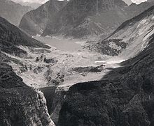

vajont dam
The Vajont Dam (or Vaiont Dam) is a disused dam, completed in 1959 in the valley of the Vajont River (it) under Monte Toc, 100 km north of Venice, Italy. A 1963 landslide caused the overtopping of the dam and around 2,000 deaths. One of the tallest dams in the world, the Vajont dam is 262 m (860 ft) high, 27 m (89 ft) thick at the base and 3.4 m (11 ft) at the top.
Its 1963 overtopping was caused when the designers ignored the geological instability of Monte Toc on the southern side of the basin. Warning signs and negative appraisals during the early stages of filling were disregarded, and the attempt to safely control the landslide into the lake created a 200 metre tall wave (ten times higher than predicted) that brought massive flooding and destruction to the Piave valley below, wiping out several villages completely.
On 12 February 2008, while launching the International Year of Planet Earth, UNESCO cited the Vajont Dam tragedy as one of five "cautionary tales", caused by "the failure of engineers and geologists".
construction
The Vajont dam was built by SADE (Società Adriatica di Elettricità, English: Adriatic Energy Corporation), the electricity supply and distribution monopolist in North-Eastern Italy. The owner, Giuseppe Volpi di Misurata, had been Mussolini's Minister of Finances for several years. [Read more]
The 'tallest dam in the world', across the Vajont gorge, was conceived in the 1920s to meet the growing demands for industrialization, but not until the confusion after Mussolini's fall during World War II was the project authorized on 15 October 1943.
The Vajont dam and basin were intended to be at the centre of a complex system of water management in which water would have been channeled from nearby valleys and artificial basins located at higher levels. Tens of kilometres of concrete pipes and pipe-bridges across valleys were planned.
In the 1950s, SADE's monopoly was confirmed by post-fascist governments and it purchased the land despite opposition by the communities of Erto and Casso in the valley, which was overcome with government and police support. SADE stated that the geology of the gorge had been studied, including analysis of ancient landslides, and that the mountain was believed to be sufficiently stable.
Construction work started in 1957, but by 1959 shifts and fractures were noticed while building a new road on the side of Monte Toc. This led to new studies in which three different experts separately told SADE that the entire side of Monte Toc was unstable and would likely collapse into the basin if the filling were completed.[4] All three were ignored by SADE. Construction was completed in October 1959, and in February 1960, SADE was authorised to start filling the basin.
early signs of disaster
Throughout the summer of 1960, minor landslides and earth movements were noticed; however, instead of heeding these warning signs, the Italian government chose to sue the handful of journalists reporting the problems for "undermining the social order." [Read more]
On 4 November 1960, with the water level of the basin at about 190 metres of the planned 262, a landslide of about 800,000 m³ collapsed into the lake. SADE stopped the filling, lowered the level by about 50 m and started to build an artificial gallery in the basin in front of Monte Toc, to keep the basin usable even when the expected further landslides divided it into two parts.[5]
In October 1961, after the completion of the gallery, SADE restarted the filling of the narrow basin under controlled monitoring. In April and May 1962, with the basin water level at 215 metres, the people of Erto and Casso reported five earthquakes of 'grade five' on the Mercalli scale, though SADE downplayed their importance.[6] SADE was then authorized to complete the filling up to the maximum level.
In July 1962, SADE's own engineers reported the results of model-based experiments on the effects of further landslides from Monte Toc into the lake. The tests indicated that a wave generated by a landslide could top the crest of the dam if the water level was 20m or less from the dam crest. It was therefore decided that a level 25m from the crest would be safe to prevent any displacement wave from over-topping the dam. However, a decision was made to fill the basin beyond that, because the engineers thought they could control the rate of the landslide by controlling the level of water in the dam.
In March 1963, the dam was transferred to the newly constituted government service for electricity, ENEL. During the following summer, with the basin almost completely filled, slides, shakes and movements of the ground were continuously reported by the alarmed population. On 15 September the entire side of the mountain moved down by 22 cm. On 26 September, ENEL decided to slowly empty the basin down to 240 m, but in early October the collapse of the mountain's south side looked unavoidable: one day it moved almost 1 m. There is no known record of any warning or evacuation order being issued to the populace.
landslide and wave
On 9 October 1963, engineers observed trees falling and rocks rolling down into the lake where the predicted landslide would take place. Prior to this, the alarming rate of movement of the landslide had not slowed as a result of lowering the water, although the water had been lowered to what SADE believed was a safe level to contain the displacement wave, should a catastrophic landslide occur. [Read more]

With a major landslide now imminent, engineers gathered on top of the dam that evening to witness the tsunami.
At 10:39 pm, a massive landslide of about 260 million m3 of forest, earth, and rock, which fell into the reservoir at up to 110 km per hour (68 mph) completely filled up the narrow reservoir in front of the dam. The landslide was much faster than predicted, taking just 45 seconds, and the resulting displacement of water caused 50 million m3 of water to overtop the dam in a 250-metre-high (820 ft) wave.[1][7]
The flooding from the huge wave in the Piave valley destroyed the villages of Longarone, Pirago, Rivalta, Villanova and Faè, killing around 2,000 people and turning the land below the dam into a flat plain of mud[8] with an impact crater 60 metres deep and 80 wide.[citation needed] Many small villages near the landslide along the lakefront also suffered damage from a giant displacement wave. Villages in the territory of Erto e Casso and the village of Codissago (it), near Castellavazzo, were largely wrecked.
Estimates of the dead range from 1,900 to 2,500 people, and about 350 families lost all members. Most of the survivors had lost relatives and friends along with their homes and belongings.
The dam itself was largely undamaged — the top metre or so of masonry was washed away, but the basic structure remained intact and still exists today.
causes and responsibilities
Immediately after the disaster, the government (which at the time owned the dam), politicians and public authorities insisted on attributing the tragedy to an unexpected and unavoidable natural event. [Read more]
The debate in the newspapers was heavily influenced by politics. The paper l'Unità, the mouthpiece of the Partito Comunista Italiano (PCI), was the first to denounce the actions of the management and government, as it had previously carried a number of articles by Tina Merlin (it) addressing the behaviour of the SADE management in the Vajont project and elsewhere. Indro Montanelli, then the most influential Italian journalist and a vocal anti-communist, attacked l'Unità and denied any human responsibility; l'Unità and the PCI were dubbed "jackals, speculating on pain and on the dead" in many articles by the Domenica del Corriere and a national campaign poster paid for by Democrazia Cristiana (DC). The catastrophe was attributed only to natural causes and God's will.[9]
The campaign accused the PCI of sending agitprops into the refugee communities, as relief personnel; most of them were partisans from Emilia Romagna who fought on Mount Toc in the Second World War and often had friends in the stricken area.[10]
Democrazia Cristiana, the party of prime minister Giovanni Leone, accused the Communist Party of 'political profiteering' from the tragedy. Leone promised to bring justice to the people killed in the disaster. A few months after he lost the premiership, he became the head of SADE's team of lawyers, who significantly reduced the amount of compensation for the survivors and ruled out payment for at least 600 victims.[11]
The DC's newspaper, La Discussione,[12] called the disaster "a mysterious act of God's love", in an article that drew sharp criticism from l'Unità.[13]
Apart from journalistic attacks and the attempted cover-up from news sources aligned with the government, there had been proven flaws in the geological assessments, and disregard of warnings about the likelihood of a disaster by SADE, ENEL and the government.
The trial was moved to L'Aquila, near Rome, by the judges who heard the preliminary trial, thus preventing public participation, and resulted in lenient sentencing for a handful of the SADE and ENEL engineers. One SADE engineer (Mario Pancini) committed suicide in 1968. The government never sued SADE for damage compensation.
Subsequent engineering analysis has focused on the cause of the landslide, and there is ongoing debate about the contribution of rainfall, dam level changes and earthquakes as triggers of the landslide, as well as differing views about whether it was an old landslide that slipped further or a completely new one.[14]
There were a number of problems with the choice of site for the dam and reservoir: the canyon was steep sided, the river had undercut its banks, and the limestone and clay-stone rocks that made up the walls of the canyon were inter-bedded with the slippery clay-like Lias and Dogger Jurassic-period horizons and the Cretaceous-period Malm horizon, all of which were inclined towards the axis of the canyon. In addition, the limestone layers contained many solution caverns that became only more saturated because of rains in September.[15]
Prior to the landslide that caused the overtopping flood, the creep of the regolith had been 0.4 inches per week. In September, this creep reached 10.0 inches per day until finally, the day before the landslide, the creep was measured at 40.0 inches (1 m).[15] At 10:39pm, on the 9th October, it was the sudden and unexpected high speed of the landslide that proved to be catastrophic, and ultimately caused the flood.
reconstruction
Most of the survivors were moved into a newly-built village, Vajont, 50 km south east on the river Tagliamento plain. Those who insisted on returning to their mountain life in Erto e Casso were strongly discouraged. Longarone and other villages in the Piave valley were rebuilt with modern houses and factories. [Read more]
The government used the disaster to promote the industrialization of the North-East of Italy. Survivors were entitled to 'business start-up' loans, public subsidies and ten years tax exemption, all of which they could 'sell-on' to major companies from the Venice region. These concessions were then converted into millions of lira for plants elsewhere. Among the corporations were Zanussi (now owned by Electrolux), Ceramica Dolomite (now owned by American Standard), Confezioni SanRemo, and SAVIC (now owned by Italcementi).[16]
Compensation measures did not clearly differentiate between victims and people who lived nearby; thus much of the compensation went to people who had suffered little damage, creating a negative public image.
A pumping station was installed in the dam basin to keep the lake at a constant level, and the bypass gallery was lengthened beyond the dam to let the water flow down to the Piave valley. The dam wall is still in place and maintained, but there are no plans to exploit it. The dry basin, filled with landslip, has been open to visitors since 2002.
The memorial church in Longarone — although its construction was strongly opposed by the surviving parish priest — is a late masterpiece of the famous architect Giovanni Michelucci.
Source: Wikipedia
Click here to see References and Bibliography